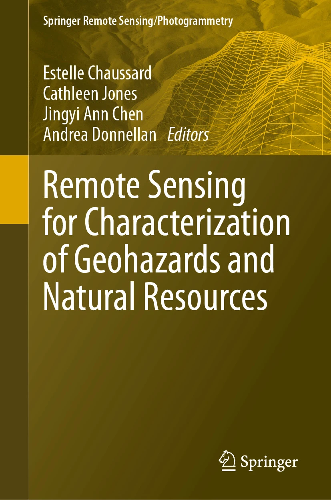
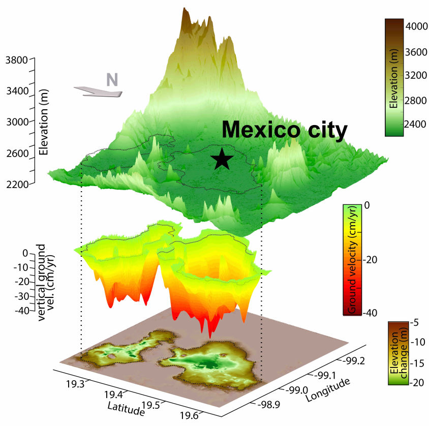
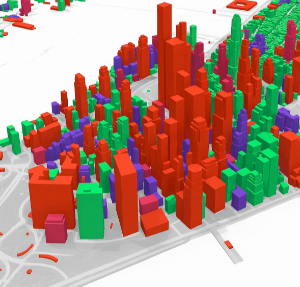
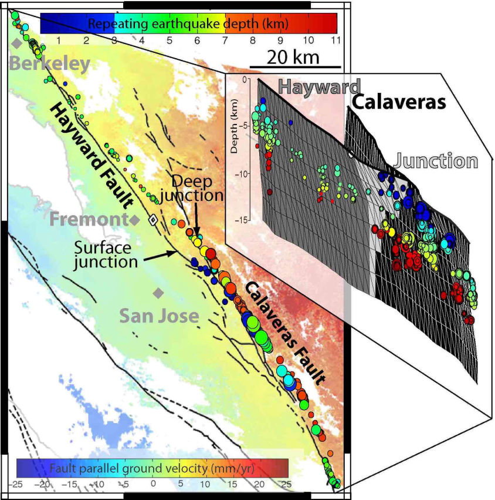
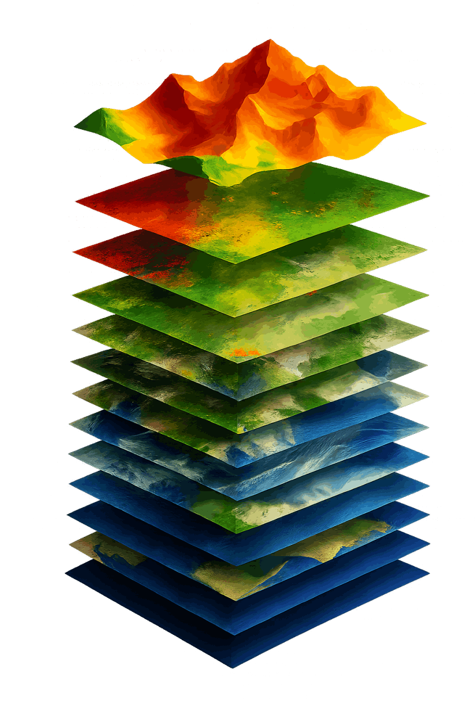

No Code Website Builder
I am a Remote Sensing Data Scientist
I transform satellite data into actionable intelligence that addresses our planet's most pressing challenges.
My expertise bridges the gap between complex data and real-world solutions. By harnessing cutting-edge techniques like InSAR, GNSS, multispectral, and LiDAR remote sensing, I quantify the most subtle shifts and changes in Earth's surface dynamics. I build advanced physics-based and machine learning models to tackle natural hazards assessment and environmental sustainability issues.
My research spans volcanology, earthquake science, hydrology, land subsidence, carbon storage monitoring, and climate change impacts—delivering insights that inform decision-making for stakeholders worldwide.
How is Space-Based Technology Solving Earth's Biggest Challenges?
My new book delves into the transformative power of remote sensing. Discover how data is helping create a more sustainable world.
Editors:
E. Chaussard, C. Jones, J. A. Chen, A. Donnellan
https://link.springer.com/book/10.1007/978-3-031-59306-2

Understanding where, why, and how fast the land is sinking is critical to building sustainable coastal communities & securing water access
From pre-disaster exposure mapping to post-event damage assessment, satellite data can guide the entire resilience lifecycle
The Earth's subtle movements help us decipher the physics of earthquakes, volcanoes, and landslides—turning data into preparedness
By integrating complex data with ML, historical patterns of changes become actionable intelligence for proactive management

Land subsidence, the gradual sinking of the ground due to groundwater pumping, is a silent threat. In cities across the world, the ground sinks, increasing flood risk, limiting sustainable water planning, and jeopardizing coastal areas.
But there is hope: Satellites reveal where and how fast risks are evolving, informing targeted intervention efforts that offer a blueprint for comprehensive resilience planning
See publications #1, 4, 5, 6, 8, 9, 14, 16, 18, 20, 24, 25, 26, 27, 28, 29, 30, 31, 32, 35
See publications # 8, 18, 20, 24, 26, 27, 29, 30, 31, 33

Satellite intelligence helps closes the critical gap between fragmented and reactive risk assessment and comprehensive, proactive risk reduction.
From prevention -exposure mapping, through response -post-event damage assessment, satellite data informs the full life-cycle of of risk management and resilience planning.
See our book for details (publication #30)

Earth's hidden dynamics are captured from space: from
the steady accumulation of stress along faults, to the movement of magma beneath volcanoes, and the seasonal acceleration of landslides. These subtle shifts help understand the processes driving Natural Hazards, enhancing preparedness and resilience capabilities.
See publications #2, 3, 4, 7, 10, 11, 12, 13, 15, 17, 19, 21, 22, 23, 34
See publications #12, 13, 14, 17, 19, 24, 28, 30, 33

Remote sensing combined with machine learning transforms environmental stewardship from crisis response into actionable management intelligence.
From creating a global wildfire propensity map, to quantifying contributions of degrading peatlands to CO2 emissions, satellite data capture environmental changes, while AI algorithms identify subtle patterns to empower actions grounded in observations.
See publications #25 and 35
Check out my AGU2025 abstract for a sneak peak
Ph.D. Univ. of Miami (FL), 2013, (Marine) Geology & Geophysics
M.Sc. Univ. of Montpellier II, Montpellier (France), 2008, Earth Sciences
B.Sc. Univ. of Montpellier II, Montpellier (France), 2006, Earth Sciences
A.Sc. Univ. of Burgundy, Dijon (France), 2005, Biology
Asst. Vice President, Lead Research Scientist (private sector) (since 2024)
Senior Research Scientist (private sector)
Asst. Professor, Dept. of Earth Sciences, U. of Oregon
Asst. Professor, Dept. of Geology, U. at Buffalo
Postdoctoral investigator, U. of California, Berkeley
NASA Earth and Space Science Graduate Fellow, U. of Miami
Graduate Research Assistant, U. of Miami
Graduate Research Assistant, U. of Montpellier II (France)
**Student first-author under direct advising/mentoring *Collaboration with student first-author
35. Hoyt, A.M., Chaussard, E., Seppalainen, S.S., Harvey, C.F. (2024) Quantifying Subsidence in Tropical Peatlands. Remote Sensing for Characterization of Geohazards and Natural Resources, 347-357, Publisher: Springer
34. Barnhart, W., Chaussard, E. (2024). The Seismic Cycle: From Observations to Models of Fault Slip. Remote Sensing for Characterization of Geohazards and Natural Resources, 305-326, Publisher: Springer
33. Vellico, M., Chaussard, E. (2024) Carbon Capture and Storage. Remote Sensing for Characterization of Geohazards and Natural Resources, 509-519, Publisher: Springer
32. Fu, Y., Thomas, B.F., Chaussard, E. (2024). Large-Scale Terrestrial Water Storage Changes Sensed by Geodesy. Remote Sensing for Characterization of Geohazards and Natural Resources, 473-491, Publisher: Springer
31. Chen, J.A., Chaussard, E. (2024) Observations of Confined Aquifer Systems. Remote Sensing for Characterization of Geohazards and Natural Resources, 463-472, Publisher: Springer
30. Chaussard, E., Jones, C., Chen, J. A., & Donnellan, A. (2024). Remote Sensing for Characterization of Geohazards and Natural Resources. (Book) Publisher: Springer
29. Mirzadeh, S. M. J.*, Jin, S., Chaussard, E., Bürgmann, R., Rezaei, A., Ghotbi, S., and Braun, A. (2023). Transition and drivers of elastic to inelastic deformation in the Abarkuh Plain from InSAR multi‐sensor time series and hydrogeological data. JGR-Solid Earth, 128(7), e2023JB026430.
28. Ermert, L. A.*, Cabral-Cano, E., Chaussard, E., Solano-Rojas, D., Quintanar, L., Morales Padilla, D., Fernández-Torres, E. A., and Denolle, M. A. (2023). Probing environmental and tectonic changes underneath Mexico City with the urban seismic field, Solid Earth, https://doi.org/10.5194/se-14-529-2023, 2023.
27. Mirzadeh, S. M. J.*, Jin, S., Parizi, E., Chaussard, E., Bürgmann, R., Delgado Blasco, J. M., et al. (2021). Characterization of Irreversible Land Subsidence in the Yazd‐Ardakan Plain, Iran From 2003 to 2020 InSAR Time Series. JGR-Solid Earth, 126(11), e2021JB022258.
26. Chaussard, E., Havazli, E., Fattahi, H., Cabral‐Cano, E., & Solano‐Rojas, D. (2021). Over a century of sinking in mexico city: No hope for significant elevation and storage capacity recovery. JGR-Solid Earth, 126, e2020JB020648. https://doi.org/10.1029/2020JB020648
25. Hoyt, A.**, Chaussard E., Seppalainen, S.S., Harvey, C.F., (2020). Widespread Subsidence and Carbon Emissions across Southeast Asian Peatlands. Nature Geoscience, 13, 435–440. https://doi.org/10.1038/s41561-020-0575-4
24. Chaussard, E., & Farr, T. G., (2019). A new method for isolating elastic from inelastic deformation in aquifer systems: Application to the San Joaquin Valley, CA. Geophys. Res. Lett., 46, 10800– 10809. https://doi.org/10.1029/2019GL084418
23. Schaefer, L.N.*, Di Traglia, F., Chaussard, E., Lu, Z., Nolesini, T., Casagli N., (2019). Monitoring volcano slope instability with Synthetic Aperture Radar: A review and new data from Pacaya (Guatemala) and Stromboli (Italy) volcanoes. Earth-science reviews, 192, pp236-257, https://doi.org/10.1016/j.earscirev.2019.03.009
22. Xu, W.*, Wu, S., Materna, K., Nadeau, R., Floyd, M., Funning, G., Chaussard, E., Johnson, C.W., Murray, J.R., Ding, X. and Bürgmann, R. (2018), Interseismic ground deformation and fault slip rates in the greater San Francisco Bay Area from two decades of space geodetic data, JGR-Solid Earth, 123(9), 8095-8109, doi: 10.1029/2018JB016004
21. Cohen-Waeber, J.**, Burgmann, R., Chaussard, E., Giannico, C., and Ferretti, A. (2018), Spatiotemporal Patterns of Precipitation-Modulated Landslide Deformation from Independent Component Analysis of InSAR Time Series, Geophys. Res. Lett., 64(1), 70, doi:10.1016/j.enggeo.2014.03.003
20. Castellazzi, P.*, Longuevergne, L., Martel., R., Rivera, A., Brouard, C., Chaussard, E., Garfias, J. (2018) Combining GRACE and InSAR for quantitative mapping of groundwater depletion at the water management scale, Remote Sensing of Environment, 205, 408–418, doi:10.1016/j.rse.2017.11.025
19. Zhan, Y.*, Gregg, P.M., Chaussard, E., and Aoki., Y. (2017) Sequential assimilation of volcanic monitoring data to quantify eruption potential: application to Kerinci volcano, Sumatra. Front. Earth Sci. 5:108. doi: 10.3389/feart.2017.00108
18. Chaussard, E., Milillo P., Bürgmann R., Perissin D., Fielding E. J. & Baker B., (2017). Remote sensing of ground deformation for monitoring groundwater management practices: application to the Santa Clara Valley during the 2012-2015 California drought. JGR-Solid Earth, 122, 8566-8582. doi.org/10.1002/2017JB014676
17. Chaussard, E., (2017). A low-cost method applicable worldwide for remotely mapping lava dome growth. J. Volcan. geotherm. Res. 341, 33-4, doi.org/10.1016/j.jvolgeores.2017.05.017
16. Castellazzi, P.*, Martel, R., Rivera, A., Huang, J., Pavlic, G., Calderhead, A. I., Chaussard, E., Garfias, J., and Salas, J., (2016), Groundwater depletion in Central Mexico: Use of GRACE and InSAR to support water resources management, Water Resources Res., 52, (8), 5985-6003.
15. Chaussard, E., (2016) Subsidence in the Parícutin lava field: causes and implications for interpretation of deformation fields at volcanoes. J. Volcan. geotherm. Res., 320, 1-11.
14. Chaussard, E., Kerosky, S.** (2016) Characterization of Black Sand Mining Activities and Their Environmental Impacts in the Philippines Using Remote Sensing. Remote Sensing, 8(2), 100; doi:10.3390/rs8020100
13. Chaussard, E., Johnson, C.W., Fattahi, H., and Bürgmann, R., (2016) Potential and limits of InSAR to characterize interseismic deformation independently of GPS data: application to the southern San Andreas Fault system. G-cubed, 17, doi:10.1002/2015GC006246
12. Chaussard, E., Bürgmann, R., Fattahi, H., Johnson, C. W., Nadeau, R., Taira, T., and Johanson, I., (2015) Interseismic coupling and refined earthquake potential on the Hayward-Calaveras fault zone, JGR-Solid Earth, 120, doi:10.1002/2015JB012230
11. Chaussard, E., Bürgmann R., Fattahi, H., Nadeau, R., Taira, T., Johnson, C.W., and Johanson, I., (2015) Potential for larger earthquakes in the East San Francisco Bay Area due to the direct connection between the Hayward & Calaveras Faults, Geophys. Res. Lett., 42, doi: 10.1002/2015GL063575
10. Fattahi, H.*, Amelung, F., Chaussard, E., Wdowinski, S., (2015) Coseismic and postseismic deformation due to the 2007 M5.5 Ghazaband fault earthquake, Balochistan, Pakistan. Geophys. Res. Lett., 42, doi:10.1002/2015GL063686
9. Cabral-Cano, E., Solano-Rojas, D., Oliver-Cabrera, T., Wdowinski, S., Chaussard, E., et al. (2015) Satellite geodesy tools for ground subsidence and associated shallow faulting hazard assessment in central Mexico, Proc. of the Int. Assoc. of Hydro. Sc., 372, doi:10.5194/piahs-372-255-2015
8. Chaussard, E., Bürgmann, R., Shirzaei, M., Fielding, E.J., and Baker, B., (2014) Predictability of hydraulic head changes and basin-wide aquifer system and fault characterization from InSAR-derived ground deformation. JGR-Solid Earth, 119, 6572–6590, doi: 10.1002/2014JB011266
7. Chaussard, E., and Amelung, F., (2014) Regional controls on magma ascent and storage in volcanic arcs. G-cubed, 15, doi:10.1002/2013GC005216
6. Chaussard, E., Wdowinski, S., Cabral E., and Amelung, F., (2014). Land subsidence in central Mexico detected by ALOS InSAR time-series, Remote Sensing of Environment, 140, 94–106
5. Chaussard, E., Amelung, F., Abidin, H., & Hong, S.-H., (2013) Sinking cities in Indonesia: ALOS PALSAR detects rapid subsidence due to groundwater and gas extraction. Remote Sensing of Environment, 128, 21, 150-161, doi:10.1016/j.rse.2012.10.015
4. Chaussard, E., and Amelung F., (2013) Characterization of Geological Hazards Using a Globally Observing Spaceborne SAR. Photogram. Eng. & Rem. Sens., 79, 11, 982-986
3. Chaussard, E., Amelung, F., and Aoki, Y., (2013) Characterization of closed and open volcanic systems in Indonesia and Mexico using InSAR time-series. JGR-Solid Earth, 118, doi:10.1002/jgrb.50288
2. Chaussard, E., & Amelung F., (2012) Precursory inflation of shallow magma reservoirs at west Sunda volcanoes detected by InSAR. Geophys. Res. Lett., 39, 21, doi: 10.1029/2012GL053817
1. Chaussard, E., Amelung, F., and Abidin, H., (2012) Sinking cities in Indonesia: space-geodetic evidences of the rates and spatial distribution of land subsidence. Proceedings of the FRINGE 2011 Workshop, Frascati, Italy (ESA SP-696)
All information and images on this website are copyrighted (2025) by Estelle Chaussard.
"We're only as solid as the ground we build on"
No Code Website Builder